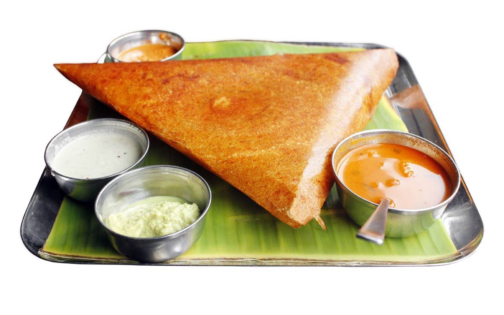
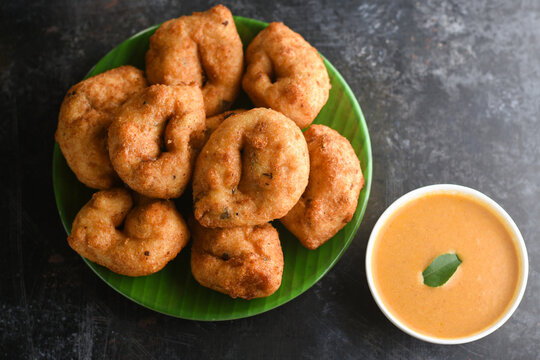
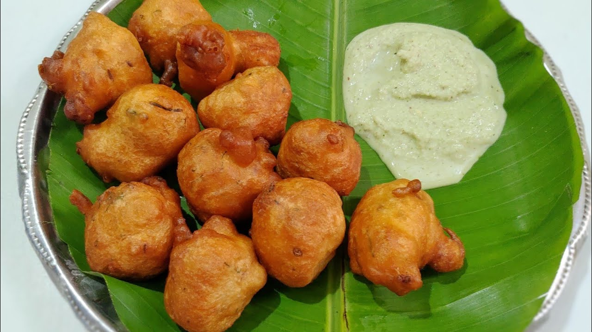
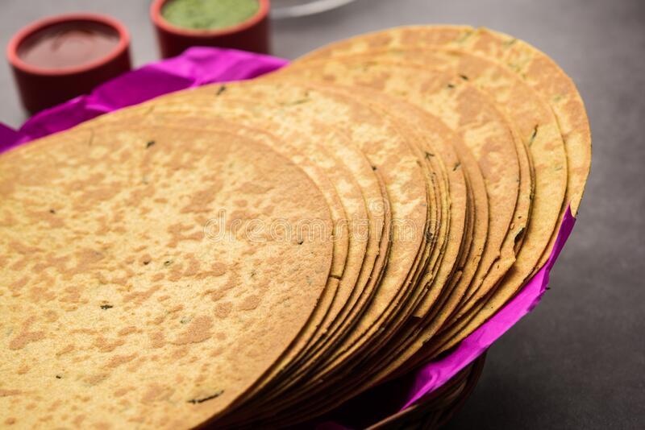

As in INDIA there are very variety of breakfast consumed by billions of peoples in INDIA but among then in each state of INDIA . The south indian breakfast is very famous rather than other foods as they have huge variaties in them.
Dosa is a fermented crepe or pancake made from urad dal (black lentil or white dal) and rice. It’s a traditional South Indian dish usually eaten for breakfast or dinner. Dosa is rich in carbohydrates and proteins. It’s a very common breakfast in the states like Tamil Nadu, Karnataka, Andhra Pradesh and Kerala.
a traditional South Indian dish usually eaten for breakfast or dinner They can either be made plain or stuffed. One masala dosa can provide your body with most of the required vitamins and nutrients. 
Idli is a south Indian savory cake popular throughout India. The cakes are made by steaming a batter consisting of fermented black lentils and rice.This easy digestable recipe makes an excellent combination with ginger and peanut chutney.
Rava idli is among the simple recipe which have the goodness of several dals and spices. It's not only healthy and irresistible but additionally quite simple to prepare too. These day there are few readymade instant rava idli packs found in market which just required water and steaming. However, nothing compares to the flavor of traditional homemade idli. To make the rava idli fluffy you can use baking soda or eno fruit salt. Without baking soda or eno fruit salt rava idli will probably be hard and rubbery, in contrast to being soft and spongy.
Medu vada is a traditional and delicious South Indian tiffin item normally eaten for breakfast or any time. Medu vada is a urad dal based fried snack is one of the delights from the South Indian cuisine. The urad dal is soaked ground together with spices and deep fried. Medu vada is best served with sambar and coconut chutney as breakfast, snack or meal dish.

It’s a complete balanced diet. Normally dishes like these have become delicacy from the regular kitchen dishes. As many people have become quite health conscious and do not prefer eating deep fried stuff. Hence quite a lot of people prepare this dish during the festivals. It takes a little time and practice to make a perfect medu vada but you won’t regret it, I’m sure. Black gram originated in India where it has been in cultivation from ancient times and is one of the most highly prized pulses of India. It has also been introduced to other tropical areas mainly by Indian immigrants.
Mysore Bonda is one of the most popular snacks originating from Mysore, Karnataka. It is also popular in Andhra Pradesh and commonly called as Mysore bajji. Mysore bonda is a lemon size dumpling made of all purpose flour (maida), rice flour, cooking soda and buttermilk. Mysore bonda is a healthy snack crunchy on the outer side and soft and spongy in the inner side of the dumpling.
This is one of the traditional snacks from Mysore cuisine. The Mysore bonda can be eaten at breakfast time or as appetizer or snacks. Mysore bonda tastes good when served hot accompanied with coconut chutney. If the Mysore bondas are served cold they become very soft, squishy and bland in taste.

Preparing the Mysore bonda is quite simple. Beat curd well and keep aside. Take a bowl, add the maida flour, rice flour, cooking soda and add buttermilk and mix into a vada batter consistency. Add cumin seeds, fresh coconut pieces finely chopped, chopped green chillies and mix in the batter and rest aside for 1 hour. Remember cooking soda when combined with an acidic ingredient such as buttermilk carbon dioxide is produced, which causes the dough or batter to rise. This helps in making the batter fluffy to get the spongyness in the Mysore bonda. Heat oil in pan, just wet in palm and form small round bondas and fry them in hot oil on slow flame. If you cook it on high flame the outer casing would turn brown fast and the batter inside would not get cooked. Remove once they turn golden brown in color. Serve it hot with coconut chutney.
Poori or puri is a deep fried Indian bread made of Wheat flour. Poori is commonly eaten during breakfast or at snack time or also taken as a light meal. Poori is prepared in India, Pakistan, Bangladesh and Turkey. Poori is frequently prepared in Northern India than Southern India as wheat is the staple in North India region. Puri is also served during special occasions or during festival or rituals accompanied with vegetable curries.

Puri is also served with sheera during poojas or rituals as prasad. The name Puri comes from the sanskrit work purika. Normally puri is prepared from maida (all purpose flour) instead of atta (wheat flour). In Pakistan and some parts of India like West Bengal, puri is usually made with maida (regular wheat flour) instead of atta. While frying, the bread puffs up. After achieving a golden-brown color it is removed and served hot.
Khakhra is one of the popular vegetarian roasted thin cracker bread or snack from the Gujarati cuisine. Khakhra is a common Gujarati Indian bread or snack item served during breakfast or snack time. Khakhra is simple to prepare and is made from whole wheat flour adding other ingredients and spices.
Khakhra is a crispy chapattior roti. There are several varieties of Khakhra like the methi, jeera, bajri, garlic, math and masala flavors. Khakhra is usually eaten with chutney, pickles, ghee or yoghurt. The Khakhra is a favorite ethnic food of the vegetarian Gujarati people and popular in north western India region too.

Aloo Paratha is well-liked Indian flatbread prepared by stuffing aloo seasoned with aromatic flavors that is encased within crusty flaky bread made with whole wheat flour. An excellent stomach filling breakfast dish prepared with lots of ghee. This dish is popularly prepared in the northern regions of India especially in Punjab and also in Pakistan.

Paratha is a flatbread that originated from the Indian Subcontinent. They are considered to be the most preferred morning meal at most north Indian homes, restaurants and dhabas across the country. Parathas can also be eaten at lunch or dinner. They are one of the best foods that kids would love to eat. Parathas are made using unleavened flour, pan fried. These breads differ from area to area highlighting the variety of Indian culture and food habits.
PRESS ON INDIAN THALI'S UP IN THE HEADING FRAME TO SEE MORE VARIETIES